Create and Manage Business Banking Roles
Learn how to establish custom roles for your business banking accounts in Online Banking. This guide walks you through setting up specific permissions and activity limits.
1
Click "Business Banking"
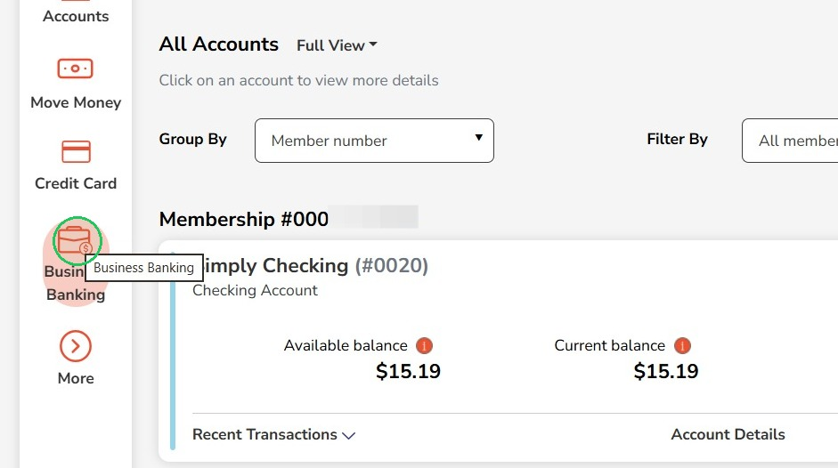
2
Click "Role Management"
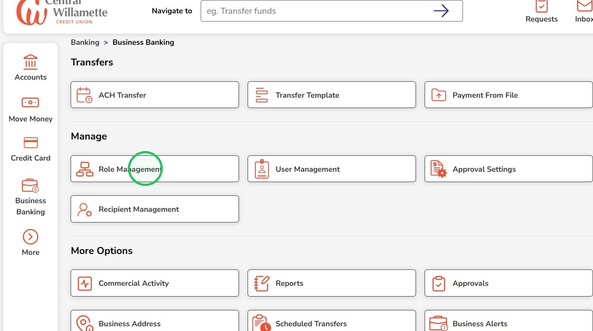
3
To create a role, click "Add a new role"
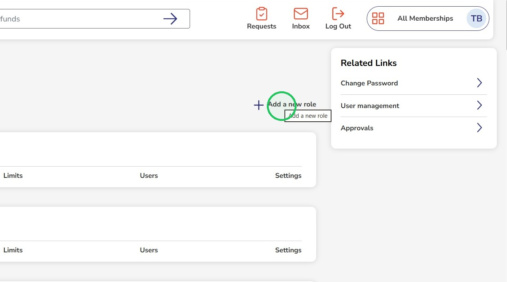
4
Enter a name for the role
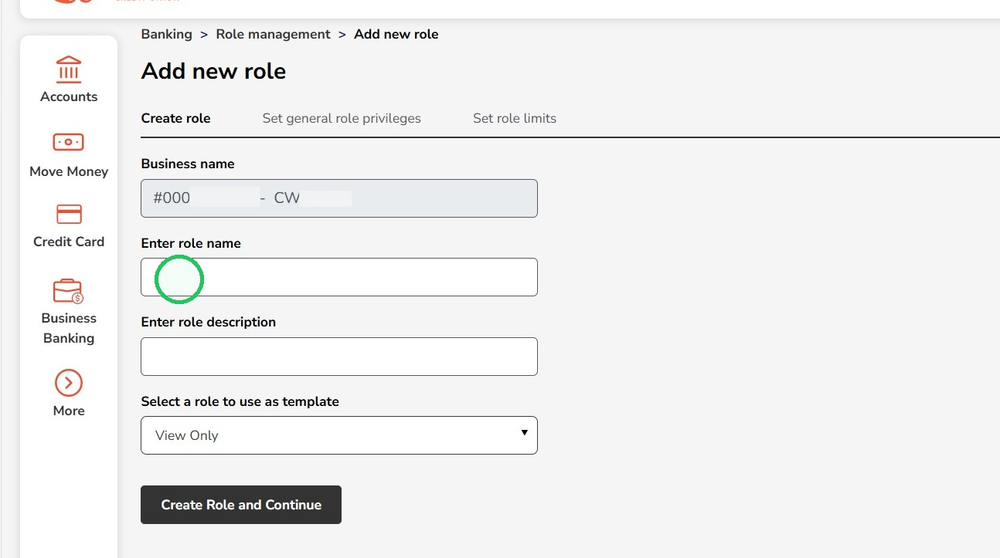
5
Enter a role description
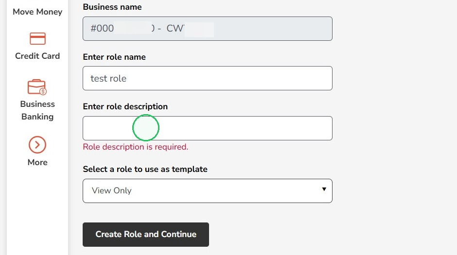
6
"View Only" will be the default template but other existing roles can also be used
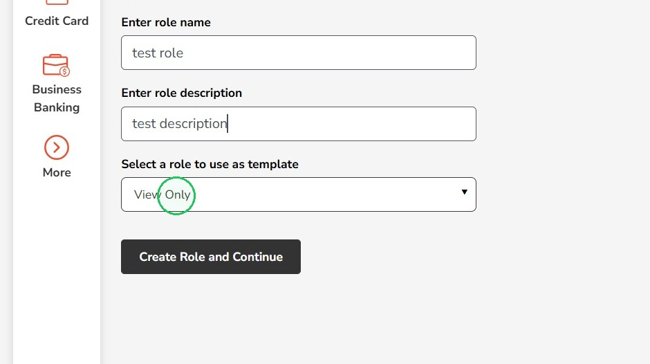
7
Click "Create Role and Continue"
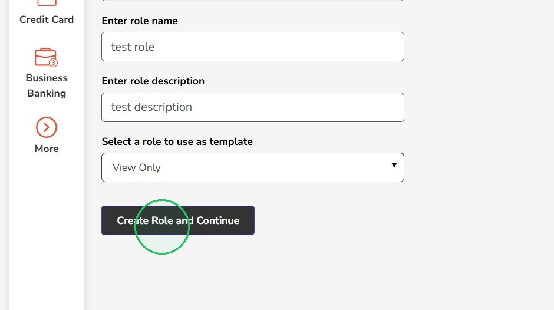
8
Adjust permissions on this page by checking and unchecking the boxes
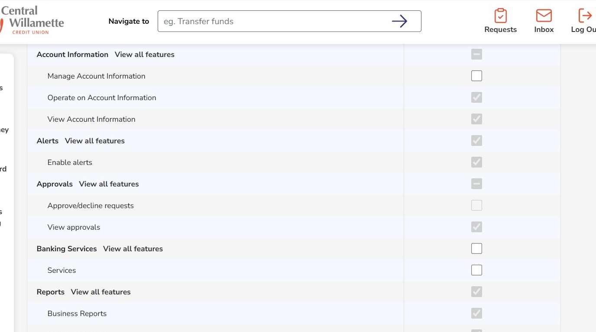
9
Click "Save & Proceed"
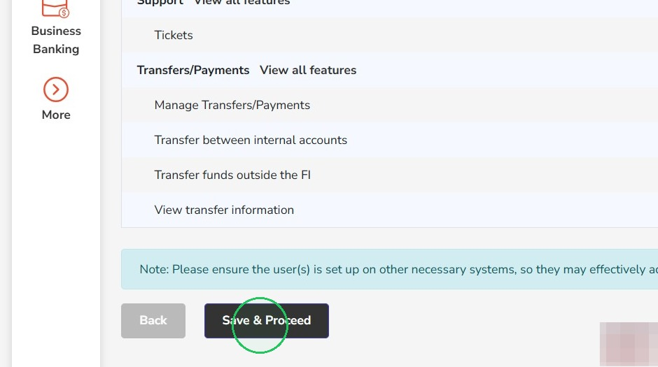
10
Click "Add new activity" to set limits, this is optional and clicking "Set role limits" will finish creating the role with no limits set
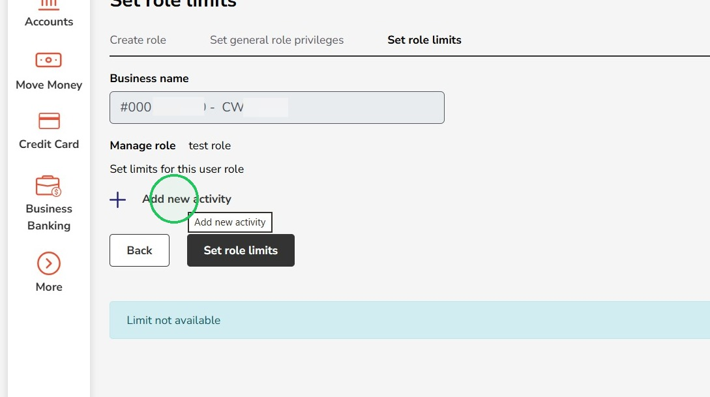
11
If setting limits, open the Activity dropdown
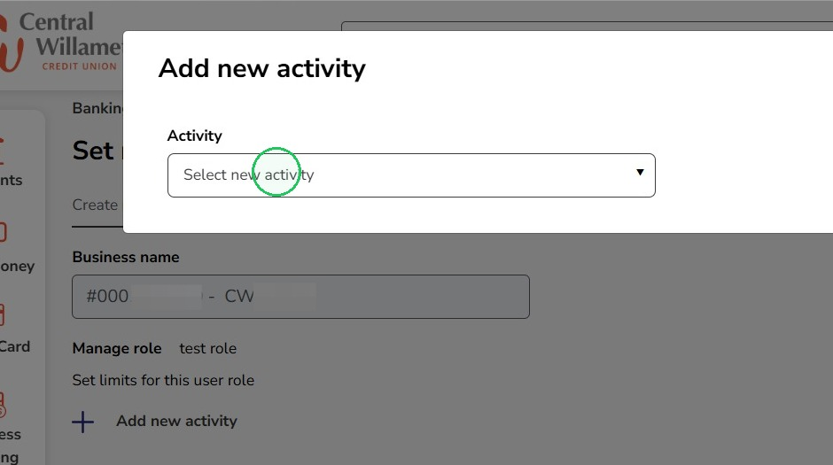
12
Select "Make ACH payments" if the business is set up for ACH payments
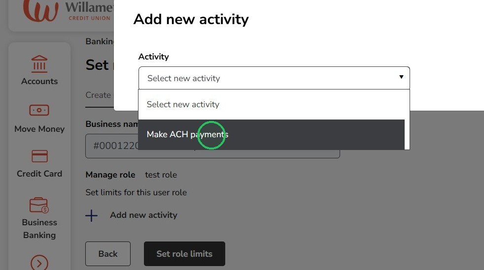
Please contact us if the business account is not set up for ACH payments but you would like to complete ACH transfers
13
Review the limit amounts and adjust as needed
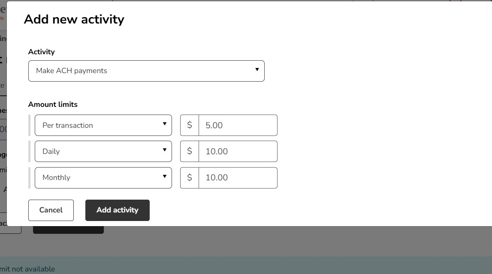
14
Click "Add activity" after the amounts are set
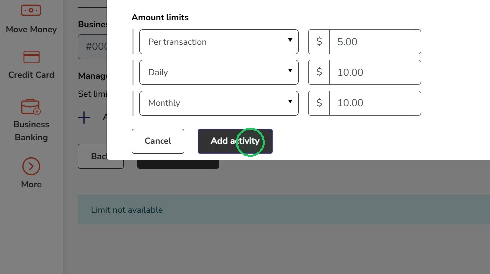
15
Click "Set role limits" to finish creating the role
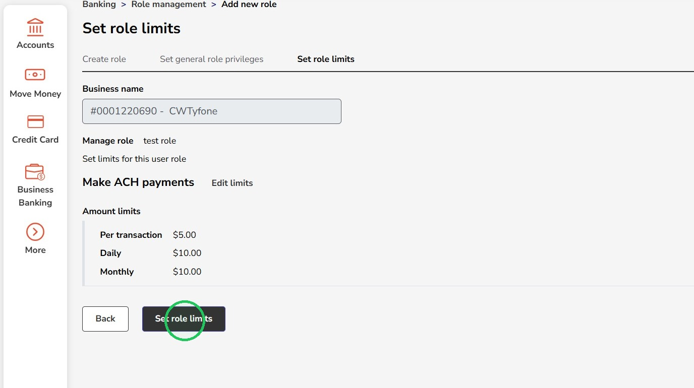
16
From the Role management page, you can view role's Permissions, Limits, Users and Settings and the "Settings" option will let you disable a role that is no longer needed
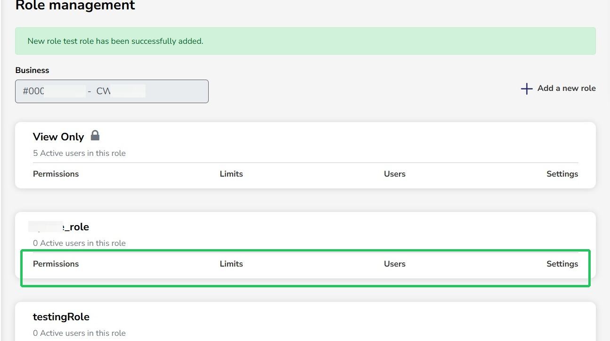
17
Uncheck the box next to "Enabled" to disable a role, then hit "Save changes"
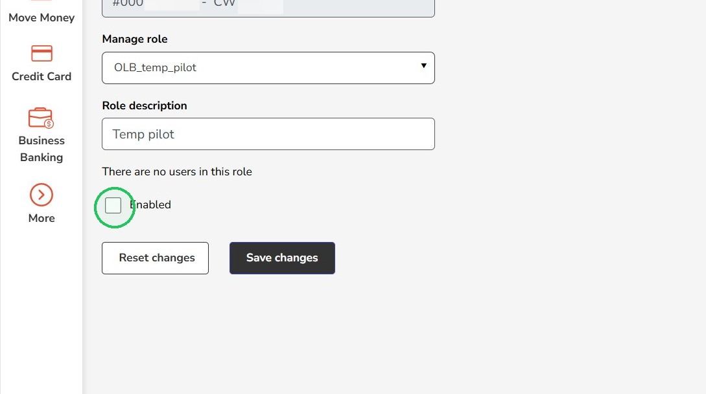
18
The role will now show as disabled
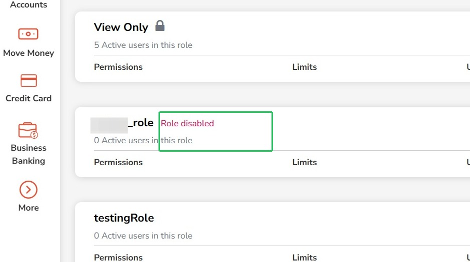